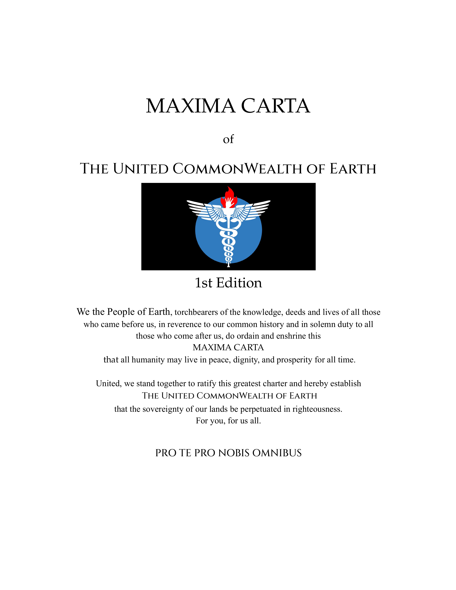

Publications du seuil

Nous, Peuples de la Terre, porteurs du flambeau de la connaissance, des actes et des vies de tous ceux qui nous ont précédés, ordonnons et consacrons cette Maxima Carta — afin que toute l'humanité puisse vivre en paix, dignité et prospérité pour tous les temps.
Le modèle constitutionnel à code ouvert établissant les droits, les autorités gouvernantes, l'appareil militaire, le système monétaire et les institutions culturelles du Commonwealth Uni de la Terre.
—
La théorie politique fondatrice de la maison d'édition — que la société fonctionne de manière optimale lorsque les individus se considèrent comme des parties prenantes égales au sein d'un système.
—
Rencontrez le compilateur et les voix derrière le projet United CommonWealth. Dans cette biographie collective, l'histoire de ses penseurs fondateurs est mise en lumière.